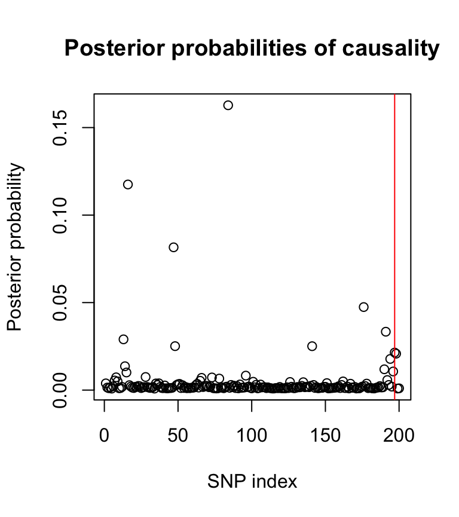

corrcov
my-vignette.RmdThis guide will show users how the corrcoverage package can be used for statistical fine-mapping, including obtaining an accurate coverage estimate for the causal variant in a credible set (corrected coverage estimate). This package is specific to credible sets obtained using the Bayesian approach to fine-mapping, described by Maller et al. here, which utilities Bayes factors for genetic association studies described by Wakefield here.
The corrcoverage package uses GWAS summary statistics to provides an accurate estimate of the probability that the true causal variant is contained within a credible set derived for a given threshold. It also provides functions so that users can move freely between joint Z-scores, marginal Z-scores, asymptotic Bayes factors and posterior probabilities of causality.
Load the library.
This package is intended for use on summary statistics obtained from GWAS, such as observed \(Z\)-scores. For the purpose of this vignette, we will simulate artificial haplotypes and GWAS data using the simGWAS package. Please refer to the walkthrough guide here from which the following is taken.
library(simGWAS)# Simulate reference haplotypes
nsnps <- 200
nhaps <- 1000
lag <- 5 # genotypes are correlated between neighbouring variants
maf <- runif(nsnps+lag,0.05,0.5) # common SNPs
laghaps <- do.call("cbind", lapply(maf, function(f) rbinom(nhaps,1,f)))
haps <- laghaps[,1:nsnps]
for(j in 1:lag)
haps <- haps + laghaps[,(1:nsnps)+j]
haps <- round(haps/matrix(apply(haps,2,max),nhaps,nsnps,byrow=TRUE))
snps <- colnames(haps) <- paste0("s",1:nsnps)
freq <- as.data.frame(haps+1)
freq$Probability <- 1/nrow(freq)
sum(freq$Probability)## [1] 1We specify the causal variant (CV) and it’s effect on disease, as an odds ratio. One causal variant is chosen since the Bayesian approach to fine-mapping relies on the assumption of one causal variant per region, which is typed in the study.
Then, we simulate marginal \(Z\)-scores. Here, we consider a (fairly small) GWAS with 5000 cases and 5000 controls.
z0 <- simulated_z_score(N0=5000, # number of controls
N1=5000, # number of cases
snps=snps, # column names in freq of SNPs for which Z scores should be generated
W=CV, # causal variants, subset of snps
gamma.W=log(OR), # log odds ratios
freq=freq # reference haplotypes
)We now use the credset function in the corrcoverage package to obtain a credible set using the Bayesian approach for fine-mapping. In brief, the function follows the standard steps from Maller’s approach:
The function requires posterior probabilities of causality as an input, and so we use the ppfunc function to convert the marginal \(Z\)-scores to posterior probabilities of causality. The ppfunc function also requires a value for \(V\), the variance of the estimated effect size, which can be easily calculated using the coloc::Var.data.cc function. The prior standard deviation of the effect size, \(W\), is an optional parameter with a default value of 0.2, which is shown to be a robust choice through our analyses.
N0 <- 5000 # number of controls
N1 <- 5000 # number of cases
varbeta <- coloc:::Var.data.cc(f = MAF, N = N1+N0, s = N1/(N0+N1)) # variance of estimated effect size
postprobs <- ppfunc(z = z0, V = varbeta)
plot(postprobs, main = "Posterior probabilities of causality", xlab = "SNP index", ylab = "Posterior probability")
abline(v = iCV, col = 2)
The posterior probability plot shows the location of the causal variant (red line). Notice that the causal variant is not the variant with the largest posterior probability. This is not rare in fine-mapping analyses and occurs due to linkage disequilibrium patterns (correlation between SNPs).
The credset function reports the variants in the credible set, the claimed coverage1 (the sum of the posterior probabilities of the variants in the set) and the number of variants in the credible set (nvar). If the CV parameter is supplied by the user (e.g. in simulation studies where the CV is known), then the output also includes a binary indicator of whether the causal variant was contained in the credible set.
We use the credset function to obtain a 90% credible set.
thresh <- 0.9
credibleset <- credset(pp = postprobs, CV = iCV, thr = thresh)
credibleset## $credset
## [1] 84 16 47 176 191 13 48 141 197 198 194 14 190 196 15 96 28 8 73 66 78 192 7 65 9 162 101 126 135 151 37 1 35 178 167 51 63 50 92 106 103 86 193 142 161 36 49 17 53 62 41 88 69 140 134 23 70 177 187 90 72 24 159 68 6 98 175 18 165 195 83 127 138 149 150 21 12 38 137 170 55 29 119 22 131 33 144 87 67 97 27 82 109 139 71 136 108 102 124 133 189 111 4 174 132 107 26 61 185 158 188 157 80 30
##
## $claimed.cov
## s30
## 0.9008649
##
## $covered
## [1] 1
##
## $nvar
## s30
## 114Here, the 90% credible set contains 114 (out of 200) variants, has a claimed coverage of 0.9009 and contains the true causal variant. In literature, authors would commonly report that they have found a 90% credible set containing 114 variants which they are at least 90% confident contains the true causal variant.
Note that if the variants are named in the pp vector, then the $credset output would contain variant names rather than indices.
Suppose we are suspicious of this coverage estimate (90% in our example) and wish to find a more accurate estimate using this fancy new package. The corrcov function can be used, which requires the following parameters:
z (marginal \(Z\)-scores)f (minor allele frequencies)N0, N1 (number of controls and cases respectively)Sigma (SNP correlation matrix)thr (threshold used to derive the credible set)Side note: If the estimated effect size coefficients (bhat) and their standard errors (sqrt(V)) are known instead of \(Z\)-scores and minor allele frequencies, then the corrcov_bhat function can be used analogously.
corrected_cov_estimate <- corrcov(z = z0, f = MAF, N0, N1, Sigma = LD, thr = thresh)## Corrected.Coverage Claimed.Coverage Threshold
## 0.9736372 0.9008649 0.9In this example, the 90% credible set may in actual fact have nearer to 97.4% coverage of the causal variant in the credible set.
For the purpose of this vignette and to see the accuracy of this corrected coverage estimate, we simulate more credible sets from the same system and calculate what proportion of these contain the true causal variant. This can obviously not be calculated in the ‘real-world’ setting, as the causal variant is unknown.
z0.tmp <- simulated_z_score(N0=5000, # number of controls
N1=5000, # number of cases
snps=snps, # column names in freq
W=CV, # causal variants, subset of snps
gamma.W=log(OR), # log odds ratios
freq=freq, # reference haplotypes
nrep = 5000
)
pps <- ppfunc.mat(zstar = z0.tmp, V = varbeta) # find pps from a matrix of simulations
cs <- apply(pps, 1, function(x) credset(x, CV = iCV, thr = thresh)$cov)
true.cov.est <- mean(cs)
true.cov.est## [1] 0.9764The estimated empirical coverage is found to be approximately 97.6%, so our estimate of ~97.4% is very accurate - far more so than the standard ‘claimed coverage’ of ~90.09%.
## Empirical.Coverage Corrected.Coverage Claimed.Coverage Threshold
## 0.9764 0.9736372 0.9008649 0.9This vignette has shown readers how to use the corrcoverage package to obtain a more accurate coverage estimate of the causal variant in a credible set. Obtaining accurate coverage estimates will allow researchers to adjust their credible set to achieve the true desired coverage - for example narrowing down a 95% credible set of 10 variants to just 5 variants. Moreover, reporting an accurate coverage estimate of the causal variant in a credible set will allow for more efficient allocation and expenditure of resources in the laborious follow-up wet lab analyses of the variants in the credible set. Altogether, this procedure will improve the efficiency of determining the genes and pathways which play a role in human disease, ultimately helping to untangle the complex relationship between genetic variants and disease.
Maller et al., 2013 Maller, J. B. et al. Bayesian refinement of association signals for 14 loci in 3 common diseases. Nature Genet. 44, 1294–1301 (2012)
simGWAS: Mary D Fortune, Chris Wallace; simGWAS: a fast method for simulation of large scale case–control GWAS summary statistics, Bioinformatics, bty898 (2018)
Wakefield, 2009 Wakefield, J. Bayes factors for genome-wide association studies: comparison with P-values. Genet. Epidemiol. 33, 79–86 (2009)
devtools::session_info()## ─ Session info ───────────────────────────────────────────────────────────────────────────────────────────────────────────────────────────────────────────────────────────────────────────────────────────────────────────────────────────────────────────────────────────────────────────────────────────────────────────────────────────────────────────────────────────────────────────────────────────────────────────────────────────────────────────────────────────────────────────────────────────────────────────────────────────────────────────────────────────────────────────────────────────────────────────────────────────────────────────────────────────────────────────────────────────────────────────────────────────────────────────────────────────────────────────────────────────────────────────────────────────────────────────────────────────────────────────────────────────────────────────────────────────────────────────────────────────────────────────────────────────────────────────────────────────────────────────────────────────────────────────────────────────────────────────────────────────────────────────────────────────────────────────────────────────────────────────────────────────────────────────────────────────────────────────────────────────────────────────────────────────────────────────────────────────────────────────────────────────────────────────────────────────────────────────────────────────────────────────────────────────────────────────────────────────────────────────────────────────────────────────────────────────────────────────────────────────────────────────────────────────────────────────────────────────────────────────────────────────────────────────────────────────────────────────────────────────────────────────────────────────────────────────────────────────────────────────────────────────────────────────────────────────────────────────────────────────────────────────────────────────────────────────────────────────────────────────────────────────────────────────────────────────────────────────────────────────────────────────────────────────────────────────────────────────────────────────────────────────────────────────────────────────────────────────────────────────────────────────────────────────────────────────────────────────────────────────────────────────────────────────────────────────────────────────────────────────────────────────────────────────────────────────────────────────────────────────────────────────────────────────────────────────────────────────────────────────────────────────────────────────────────────────────────────────────────────────────────────────────────────────────────────────────────────────────────────────────────────────────────────────────────────────────────────────────────────────────────────────────────────────────────────────────────────────────────────────────────────────────────────────────────────────────────────────────────────────────────────────────────────────────────────────────────────
## setting value
## version R version 3.5.3 (2019-03-11)
## os macOS High Sierra 10.13.6
## system x86_64, darwin15.6.0
## ui X11
## language (EN)
## collate en_GB.UTF-8
## ctype en_GB.UTF-8
## tz Europe/London
## date 2019-04-16
##
## ─ Packages ───────────────────────────────────────────────────────────────────────────────────────────────────────────────────────────────────────────────────────────────────────────────────────────────────────────────────────────────────────────────────────────────────────────────────────────────────────────────────────────────────────────────────────────────────────────────────────────────────────────────────────────────────────────────────────────────────────────────────────────────────────────────────────────────────────────────────────────────────────────────────────────────────────────────────────────────────────────────────────────────────────────────────────────────────────────────────────────────────────────────────────────────────────────────────────────────────────────────────────────────────────────────────────────────────────────────────────────────────────────────────────────────────────────────────────────────────────────────────────────────────────────────────────────────────────────────────────────────────────────────────────────────────────────────────────────────────────────────────────────────────────────────────────────────────────────────────────────────────────────────────────────────────────────────────────────────────────────────────────────────────────────────────────────────────────────────────────────────────────────────────────────────────────────────────────────────────────────────────────────────────────────────────────────────────────────────────────────────────────────────────────────────────────────────────────────────────────────────────────────────────────────────────────────────────────────────────────────────────────────────────────────────────────────────────────────────────────────────────────────────────────────────────────────────────────────────────────────────────────────────────────────────────────────────────────────────────────────────────────────────────────────────────────────────────────────────────────────────────────────────────────────────────────────────────────────────────────────────────────────────────────────────────────────────────────────────────────────────────────────────────────────────────────────────────────────────────────────────────────────────────────────────────────────────────────────────────────────────────────────────────────────────────────────────────────────────────────────────────────────────────────────────────────────────────────────────────────────────────────────────────────────────────────────────────────────────────────────────────────────────────────────────────────────────────────────────────────────────────────────────────────────────────────────────────────────────────────────────────────────────────────────────────────────────────────────────────────────────────────────────────────────────────────────────────────────────────────────────────────────────────────────────────────────────────────────────────────────────────────────────────────────────────────────
## package * version date lib source
## assertthat 0.2.1 2019-03-21 [1] CRAN (R 3.5.2)
## backports 1.1.3 2018-12-14 [1] CRAN (R 3.5.0)
## BiocGenerics 0.28.0 2018-10-30 [1] Bioconductor
## BMA 3.18.9 2018-09-14 [1] CRAN (R 3.5.0)
## callr 3.1.1 2018-12-21 [1] CRAN (R 3.5.0)
## cli 1.1.0 2019-03-19 [1] CRAN (R 3.5.2)
## cluster 2.0.7-1 2018-04-13 [1] CRAN (R 3.5.3)
## coloc 3.1 2018-02-24 [1] CRAN (R 3.5.0)
## colorspace 1.4-1 2019-03-18 [1] CRAN (R 3.5.2)
## combinat 0.0-8 2012-10-29 [1] CRAN (R 3.5.0)
## commonmark 1.7 2018-12-01 [1] CRAN (R 3.5.0)
## corpcor 1.6.9 2017-04-01 [1] CRAN (R 3.5.0)
## corrcoverage * 0.0.1.900 2019-04-16 [1] local
## crayon 1.3.4 2017-09-16 [1] CRAN (R 3.5.0)
## DEoptimR 1.0-8 2016-11-19 [1] CRAN (R 3.5.0)
## desc 1.2.0 2018-05-01 [1] CRAN (R 3.5.0)
## devtools 2.0.1 2018-10-26 [1] CRAN (R 3.5.1)
## digest 0.6.18 2018-10-10 [1] CRAN (R 3.5.0)
## dplyr 0.8.0.1 2019-02-15 [1] CRAN (R 3.5.2)
## evaluate 0.13 2019-02-12 [1] CRAN (R 3.5.2)
## fs 1.2.6 2018-08-23 [1] CRAN (R 3.5.0)
## ggplot2 3.1.1 2019-04-07 [1] CRAN (R 3.5.2)
## glue 1.3.1 2019-03-12 [1] CRAN (R 3.5.2)
## gtable 0.3.0 2019-03-25 [1] CRAN (R 3.5.2)
## htmltools 0.3.6 2017-04-28 [1] CRAN (R 3.5.0)
## inline 0.3.15 2018-05-18 [1] CRAN (R 3.5.0)
## knitr 1.22 2019-03-08 [1] CRAN (R 3.5.1)
## lattice 0.20-38 2018-11-04 [1] CRAN (R 3.5.3)
## lazyeval 0.2.2 2019-03-15 [1] CRAN (R 3.5.2)
## leaps 3.0 2017-01-10 [1] CRAN (R 3.5.0)
## magrittr 1.5 2014-11-22 [1] CRAN (R 3.5.0)
## MASS 7.3-51.1 2018-11-01 [1] CRAN (R 3.5.3)
## Matrix 1.2-15 2018-11-01 [1] CRAN (R 3.5.3)
## memoise 1.1.0 2017-04-21 [1] CRAN (R 3.5.0)
## munsell 0.5.0 2018-06-12 [1] CRAN (R 3.5.0)
## mvtnorm 1.0-10 2019-03-05 [1] CRAN (R 3.5.2)
## pcaPP 1.9-73 2018-01-14 [1] CRAN (R 3.5.0)
## pillar 1.3.1 2018-12-15 [1] CRAN (R 3.5.0)
## pkgbuild 1.0.2 2018-10-16 [1] CRAN (R 3.5.0)
## pkgconfig 2.0.2 2018-08-16 [1] CRAN (R 3.5.0)
## pkgdown 1.3.0.9000 2019-02-06 [1] Github (r-lib/pkgdown@7e788c4)
## pkgload 1.0.2 2018-10-29 [1] CRAN (R 3.5.0)
## plyr 1.8.4 2016-06-08 [1] CRAN (R 3.5.0)
## prettyunits 1.0.2 2015-07-13 [1] CRAN (R 3.5.0)
## processx 3.2.1 2018-12-05 [1] CRAN (R 3.5.0)
## ps 1.3.0 2018-12-21 [1] CRAN (R 3.5.0)
## purrr 0.3.1 2019-03-03 [1] CRAN (R 3.5.2)
## R6 2.4.0 2019-02-14 [1] CRAN (R 3.5.2)
## Rcpp 1.0.1 2019-03-17 [1] CRAN (R 3.5.2)
## remotes 2.0.2 2018-10-30 [1] CRAN (R 3.5.0)
## reshape 0.8.8 2018-10-23 [1] CRAN (R 3.5.0)
## rlang 0.3.4 2019-04-07 [1] CRAN (R 3.5.2)
## rmarkdown 1.11 2018-12-08 [1] CRAN (R 3.5.0)
## robustbase 0.93-4 2019-03-19 [1] CRAN (R 3.5.2)
## roxygen2 6.1.1 2018-11-07 [1] CRAN (R 3.5.0)
## rprojroot 1.3-2 2018-01-03 [1] CRAN (R 3.5.0)
## rrcov 1.4-7 2018-11-15 [1] CRAN (R 3.5.0)
## rstudioapi 0.9.0 2019-01-09 [1] CRAN (R 3.5.2)
## scales 1.0.0 2018-08-09 [1] CRAN (R 3.5.0)
## sessioninfo 1.1.1 2018-11-05 [1] CRAN (R 3.5.0)
## simGWAS * 0.2.0-1 2018-11-13 [1] Github (chr1swallace/simGWAS@7ed37da)
## snpStats 1.32.0 2018-10-30 [1] Bioconductor
## stringi 1.4.3 2019-03-12 [1] CRAN (R 3.5.2)
## stringr 1.4.0 2019-02-10 [1] CRAN (R 3.5.2)
## survival 2.43-3 2018-11-26 [1] CRAN (R 3.5.3)
## testthat 2.0.1 2018-10-13 [1] CRAN (R 3.5.0)
## tibble 2.1.1 2019-03-16 [1] CRAN (R 3.5.2)
## tidyselect 0.2.5 2018-10-11 [1] CRAN (R 3.5.0)
## usethis 1.4.0 2018-08-14 [1] CRAN (R 3.5.0)
## withr 2.1.2 2018-03-15 [1] CRAN (R 3.5.0)
## xfun 0.5 2019-02-20 [1] CRAN (R 3.5.2)
## xml2 1.2.0 2018-01-24 [1] CRAN (R 3.5.0)
## yaml 2.2.0 2018-07-25 [1] CRAN (R 3.5.0)
## zlibbioc 1.28.0 2018-10-30 [1] Bioconductor
##
## [1] /Library/Frameworks/R.framework/Versions/3.5/Resources/libraryResearchers commonly use the size of the credible set as an estimate of the coverage probability of the causal variant in the set. It is believed to be a slightly better indicator of coverage than the threshold (claimed coverage > threshold by virtue of the method).↩